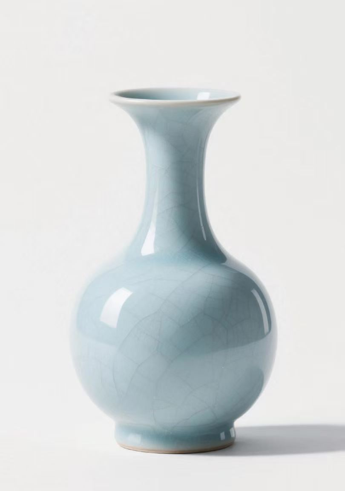
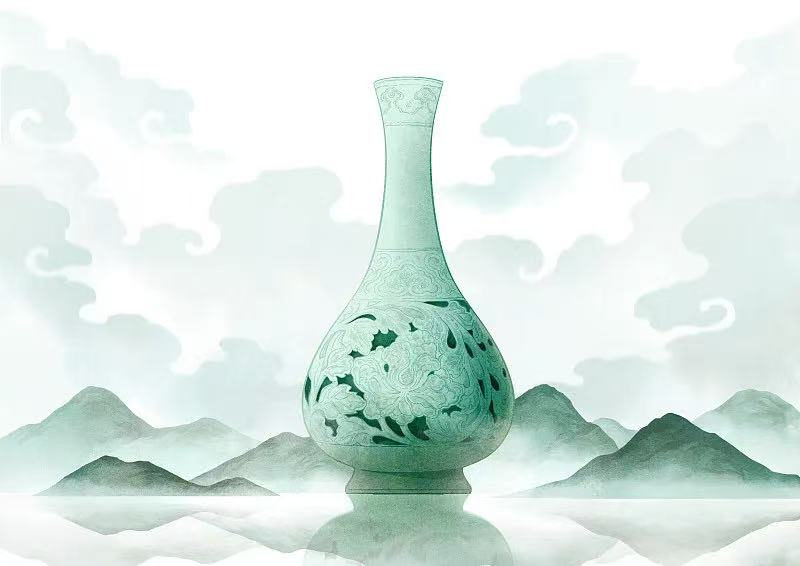
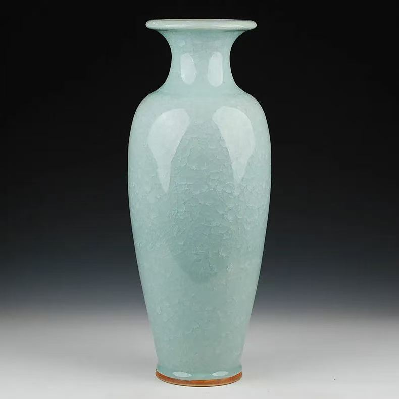

沉浸式数字博物馆
官瓷文化与技艺科普馆 · 千年匠心，数字重生
匠心工坊 · 72道工序
从选料到成器，每一步都凝聚匠心
匠心工坊是宋煌官瓷数字化体验平台的核心板块，由河南大学仝瓷记忆技术团队历时三年打造。我们采用数字孪生技术，将宋代官窑传承千年的72道制瓷工序进行1:1数字化还原，打破了传统非遗技艺"口传心授、师徒相承"的传播局限，让每一位用户都能深入了解官瓷制作的每一个细节。
交互式时间轴
从"采石制泥"到"开窑验货"，72道工序完整呈现，点击任意工序即可查看详细步骤、工具介绍和工艺要点。
显微摄影技术
放大100倍展示釉料在高温下的结晶过程，清晰呈现天青色釉面形成的微观世界。
匠人访谈实录
收录国家级非遗传承人亲口讲述的制瓷心得和独家秘诀，传承匠人精神。
虚拟操作体验
模拟拉坯、施釉等关键工序，让用户在互动中感受制瓷的乐趣和难度。
化学原理解析
科学解释釉料配方、窑温控制与最终釉色之间的关系，揭示"一窑生一窑死"的奥秘。
左右滑动浏览更多工序
工序详解

选料
精选河南禹州特有的高岭土、长石和石英，经过多次淘洗、沉淀、陈腐，去除杂质，使泥质细腻如脂。原料的品质直接决定了成品的档次，这是官瓷区别于普通瓷器的第一道门槛。
揉泥
采用菊花揉和羊角揉两种传统手法，反复揉压排除泥料中的气泡，防止烧制过程中出现炸裂。需经百余次手工揉制，直至泥料均匀致密、柔韧如膏方可使用。
拉坯
在转速均匀的陶轮上，用双手将泥料拉塑成各种器型，要求壁厚均匀，线条流畅，一气呵成。拉坯是制瓷工序中最具艺术性的环节，匠人的手感和经验至关重要。
修坯
待坯体半干时，用修坯刀精细修整外形，使器型更加规整美观。这是决定瓷器最终形态的关键工序，稍有不慎便会前功尽弃。

施釉
采用荡釉、浸釉、喷釉等多种技法，将釉料均匀地覆盖在坯体表面，釉层厚度控制在0.5-1毫米之间。釉料配方是官窑的核心机密，天青色的呈现全赖于此。

素烧
将修好的坯体放入窑中，在800℃左右的温度下进行第一次烧制，使坯体硬化，便于后续施釉。素烧温度的精准控制直接影响釉面的附着效果。

烧制
在1280-1320℃的高温下，经过12-15小时的烧制，釉料发生复杂的物理和化学反应，形成独特的天青色和冰裂纹。宋代官窑特有的满釉工艺，将器物底部也施满釉，仅用三个细小的支钉支撑烧制，成品几乎看不到任何瑕疵。窑内气氛的精妙控制，正是"一窑生一窑死"的奥秘所在。
让用户从"旁观者"变成"参与者"，深入理解官瓷制作的艰辛与不易，真正体会"工匠精神"的内涵。
官瓷通史 · 千年传承
从北宋至今，官窑瓷器的历史演变
官瓷通史构建了一个完整的宋代官瓷知识图谱，系统梳理了从北宋徽宗年间官窑设立，到南宋官窑延续，再到元明清各代传承发展的完整历史脉络。通过数字化叙事手段，结合历史文献、考古发现和虚拟复原场景，带用户穿越千年时空，感受宋瓷文化的博大精深。
交互式知识图谱
清晰展示官瓷与汝窑、哥窑、钧窑、定窑等五大名窑之间的关系，以及官瓷对后世瓷器发展的影响。
虚拟复原场景
3D复原北宋汴京官窑和南宋修内司官窑的窑场布局、生产流程和宫廷用瓷制度。
文物数字档案
收录全球各大博物馆收藏的宋代官瓷珍品高清图片和详细介绍，见在线商城。
左右滑动浏览各朝代
宋代官瓷不仅是一种实用器物，更是宋代文人审美情趣和哲学思想的体现。它追求"天人合一"的境界，崇尚自然、含蓄、淡雅之美，代表了中国古代陶瓷艺术的最高水平。